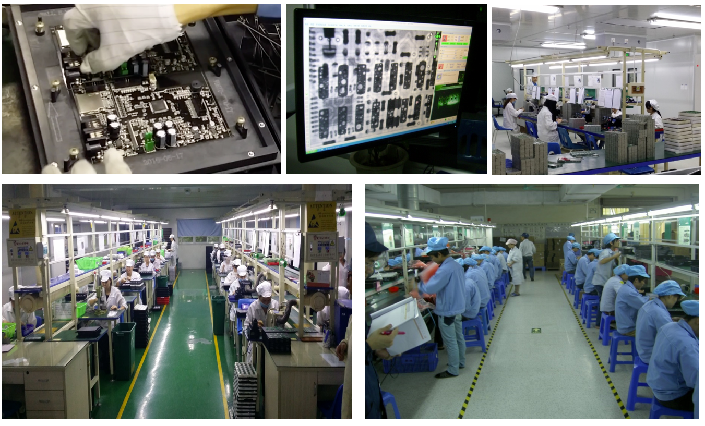

Design testarmaturer, implementer og verificer pålidelighed
Programmering og kalibrering
Dokumentation såvel som kvantiseret test giver pålidelige produkter.
Sikker test pålidelighed
Opnå automatisk test i stedet for operatørstyret
Bedre samlet kvalitet
Længere levetid
Lavere skrothastighed
Mindre spild
Mindre leveringsforsinkelse
Følg strenge IPC 2-regler og streng kontrol over ESD-regler og håndlodning.
